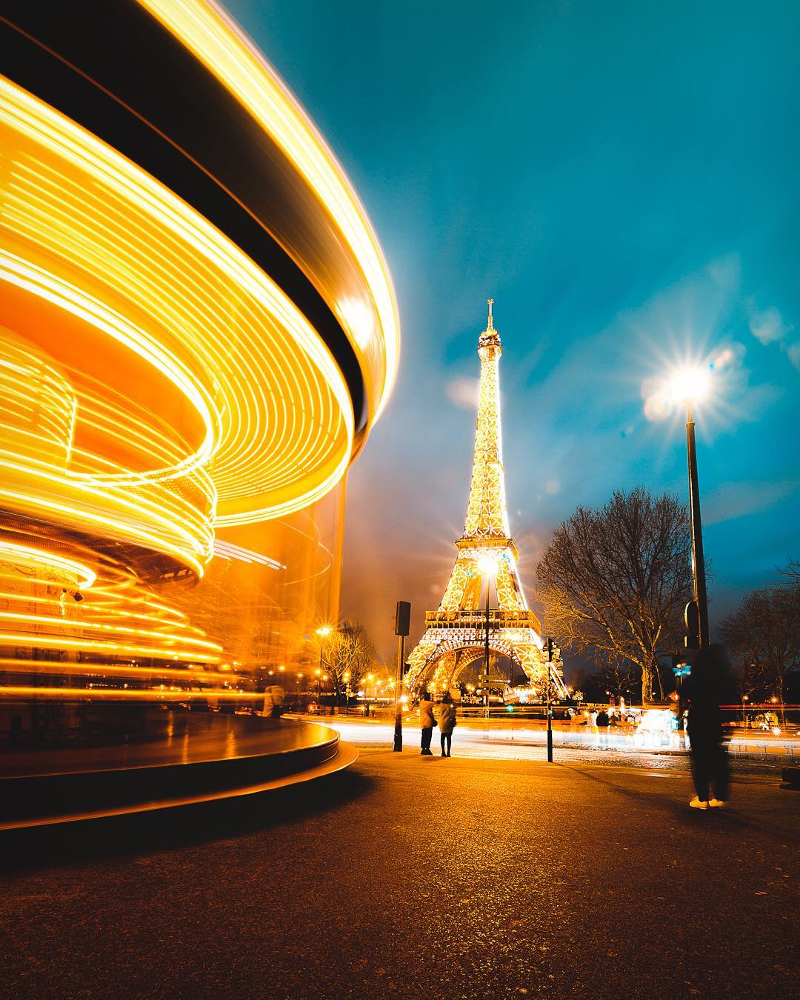
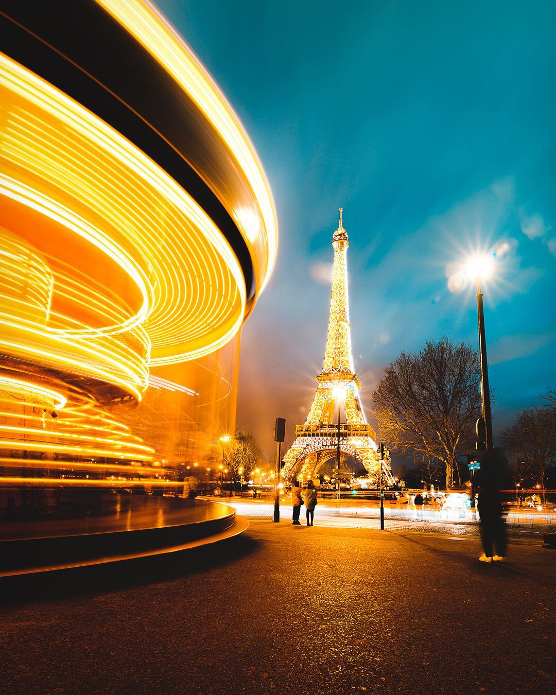

France is renowned for its rich cultural heritage, including art, cuisine, and fashion. It boasts iconic landmarks like the Eiffel Tower and the Louvre, while French cuisine, wine, and cheese are celebrated worldwide. With a history marked by revolutions and a language of diplomacy, France's influence extends globally. Its cinematic legacy, picturesque landscapes, and architectural marvels further contribute to its allure as a leading cultural and tourist destination.
Ever since I was a kid, the Eiffel Tower has been stuck in my head. Maybe it's all those pictures, or seeing it in movies, but it just looks amazing. Anyway, it seems super romantic, you know? Like, imagine looking out over all of Paris at sunset, with all the lights twinkling. Perfect for sharing a special moment with someone special. But it's not all about lovey-dovey stuff. The Eiffel Tower is also this giant piece of metal that somehow touches the sky. It's crazy to think how they even built it back in the day. I just have to see it up close, feel how tall it really is.
Now we gotta talk about the Louvre Museum! This place is like, bursting with history and famous art – we're talking the Mona Lisa and all that! I can't wait to wander around those giant halls, seeing statues and paintings that are older than my whole country! It'll be like stepping into another time, you know? Like, what were people thinking when they made this stuff? Plus, there's gotta be some crazy stories behind all this art. Imagine all the kings, queens, and important folks who walked through these same halls hundreds of years ago. Maybe I'll even recognize something from history class, wouldn't that be cool?
Hunspach is a lovely village located in the north of Alsace and was elected Favorite Village of the French in 2020. I wanted to visit Hunspach because it's a cute little village in Alsace, France. I heard it's super pretty, with old-fashioned houses and colorful flowers everywhere. I just wanted to walk around and see all the old buildings and imagine what life was like back in the day. I also wanted to try some local food, like Alsatian pizza and sauerkraut, and maybe sip on some Riesling wine.

 
